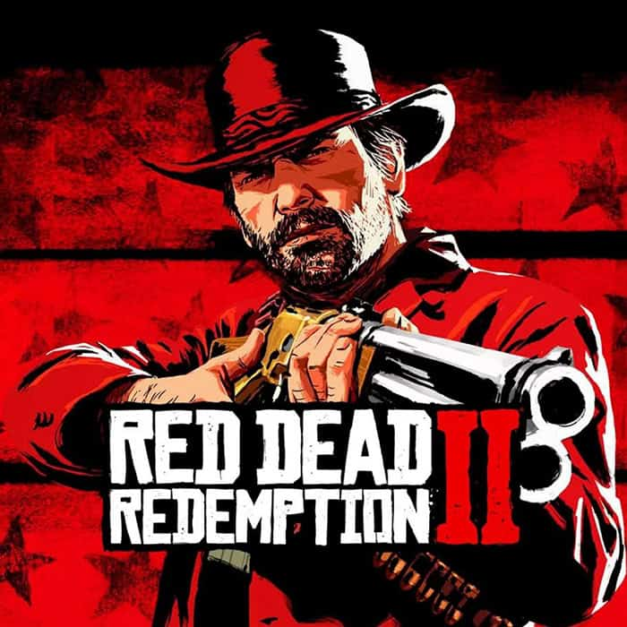
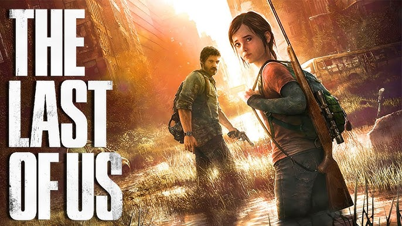
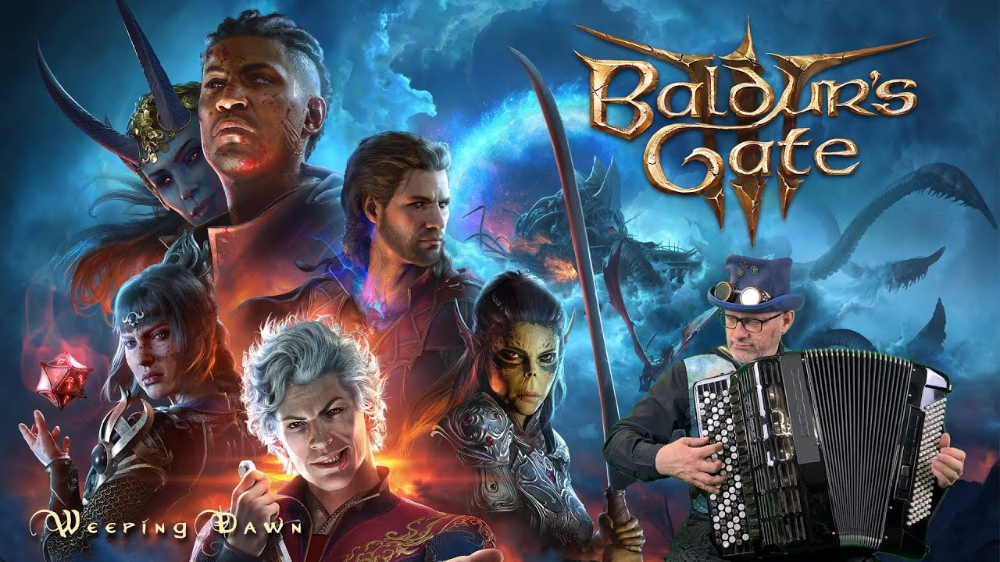

Вечните Шампиони: Игрите с Най-добри Оценки
Red Dead Redemption 2
Red Dead Redemption 2 е екшън-приключенска игра от 2018 г., разработена и публикувана от Rockstar Games. Играта е третата част от поредицата Red Dead и е предистория на играта Red Dead Redemption от 2010. Тя спечели повече от 175 награди „Игра на годината" и получи множество други отличия от церемонии по награждаване и гейминг издания. Счита се за едно от най-значимите заглавия за конзолни игри от осмо поколение и сред най-великите видеоигри, правени някога.

The Last of Us
The Last of Us е екшън-приключенска поредица от видеоигри и медиен франчайз, създаден от Naughty Dog и публикуван от Sony Interactive Entertainment. Поредицата се развива в постапокалиптични Съединени щати, опустошени от канибалистични хора, заразени с мутирала гъба от рода Cordyceps. Серията получи признание от критиката и спечели множество награди, включително няколко признания за Игра на годината; първата игра е класирана като една от най-великите видеоигри, правени някога, а втората спечели повече от 320 награди за Игра на годината.

Baldur's Gate 3
Baldur's Gate 3 е ролева видеоигра от 2023 г. от Larian Studios. Играчите създават персонализируем герой и се впускат в куестове с група от озвучени спътници. Baldur's Gate 3 получи признание от критиката и рекорден успех на наградите, като похвалите бяха насочени към кинематографичната графика, сценария, качеството на продукцията и изпълнението. Тя стана първото заглавие, спечелило наградата „Игра на годината" на всичките пет големи церемонии по връчване на награди за видеоигри и получи същото отличие от няколко издания.
